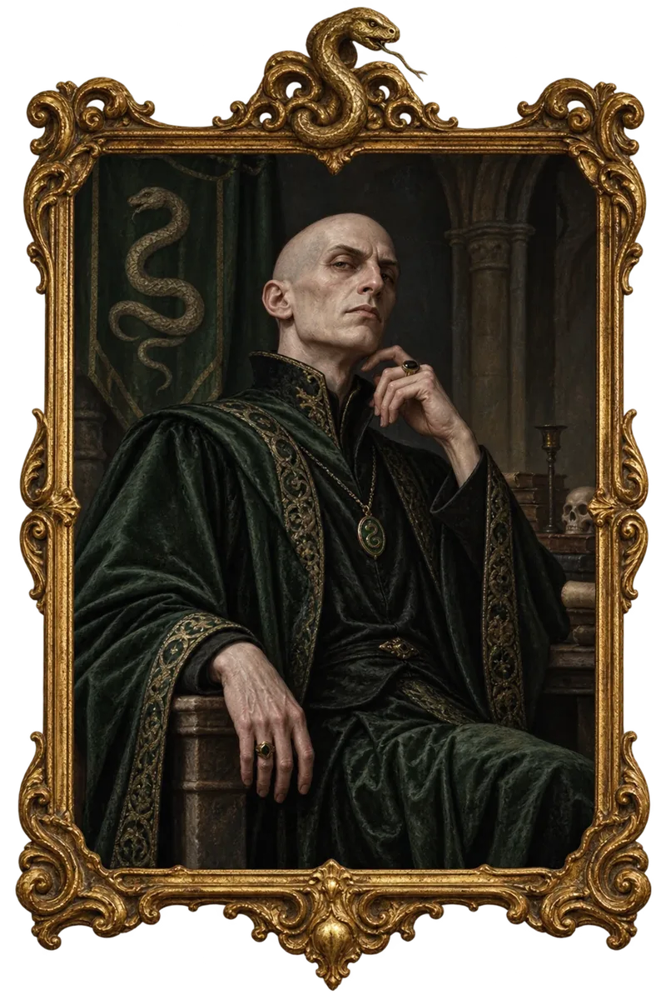

← Síň slávy
Mapa hradu

Hradní zdi zatím neprozradily tajemství tohoto místa. Nejdřív promluv s Nickem.
Za bustou v Síni slávy
Zapomenutá místnost
Mezi pavučinami visí starý portrét Salazara Zmijozela.